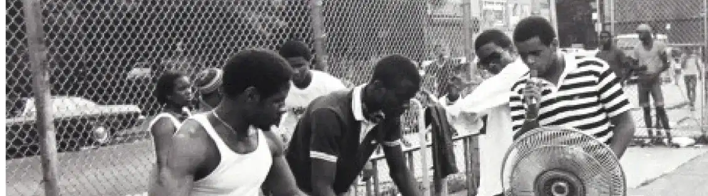

Bad Boys
Ce son est issu de l’album Métèque et Mat, sorti en 1995 cet album ne fut pas un succès comme avait connu AKH avec le groupe IAM. Paradoxalement à ce « flop » plusieurs singles on connut des succès comme le son « Bad Boys de Marseille Part.2 ». Utilisé notamment par le Stade Vélodrome pour l’entrainement de ses joueurs, le son est une référence de l’identité marseillaise. Dans son single AKH décris le comportement de la majorité des Marseillais. Il suit la tendance musicale de l’époque : le R&B. Issus du rap Akhenaton a sue se faire une place au sein de la musique Française. Pour réaliser ce track qui tournera en boucle sur toutes les radios de l’époque AKH invitera son ami Shurik’n ainsi que le groupe Fonky Familily qui émerge dans la musique marseillaise. Dès le début du son, on peut tout de suite apercevoir une sonorité qui n’est pas habituel a l’époque. L’instrumental ramène du soleil a la musique. Ensuite comme à son habitude Akhenaton ouvre la voie avec un couplet qui décris le contexte de l’écriture de sa musique.

Pour le refrain une femme est mise en avant avec le groupe d’hommes qui chantent en canon (backs). L’alternance de couplets rap et d’un refrain R&B a permis un succès. Le fait d’avoir enregistré son album à New-York, il a pu avoir un avis sur la mentalité Américaine. L’enregistrement du son ainsi que la réalisation du clip a été faite de façon humoristique, c’est-à-dire il se moque de l’esthétique des feuilletons américains.Ayant des goûts musicaux qui ont évoluer, je me suis d’avantage intéressé a la musique des années 90’s notamment le hip hop. Avec pour première écoute un son de IAM, qui ce groupe issu de Marseille représente la culture et la mentalité marseillaise, c’est-à-dire le partage, la mixité.
Suprême NTM, ou simplement NTM, est un groupe de rap français. Originaire du département de la Seine-Saint-Denis et composé principalement de deux rappeurs, Joeystarr et Kool Shen.
En savoir plus sur NTM
Lunatic est un duo de hip-hop français, originaire des Hauts-de-Seine. Le groupe se forme en 1994 par Booba et Ali.
En savoir plus sur LUNATIC